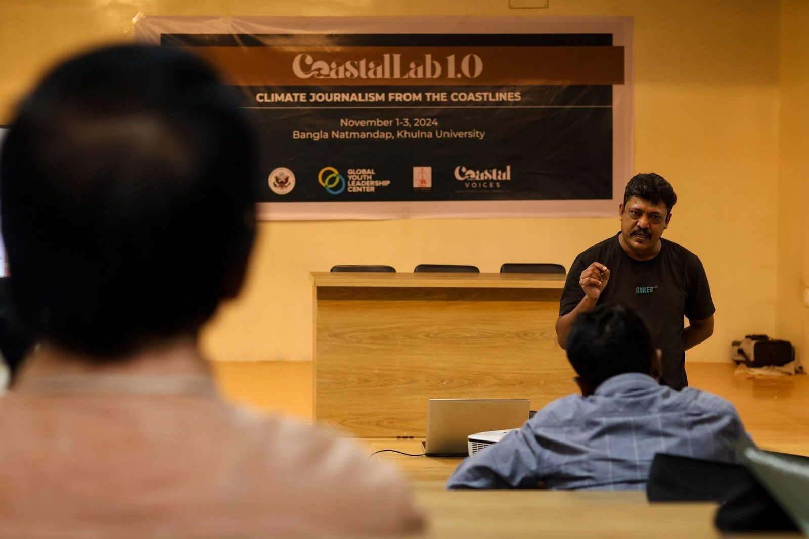

Voices from the Shore: Navigating Community Journalism in Coastal Region
This session focused on the role of community journalism in making sure the voices of coastal communities affected by climate change are heard. Participants explored strategies for building trust and engaging with local populations, learning how to document firsthand accounts of environmental changes and adaptation efforts. Through interactive discussions and case studies, they examined successful examples of community-driven storytelling and its impact on public discourse and policy. The session stressed sensitivity in reporting, ethical considerations, and ways to represent community perspectives accurately and powerfully.

Trainer Profile
Rafiqul Islam MontuA leading Bangladeshi freelance journalist specializing in climate and coastal reporting for over three decades. His work on environmental and human rights issues has appeared in The Guardian, Thomson Reuters, and Eco-Business. He has received 20 national and international awards, including UNICEF's Meena Award, authored two books, and completed fellowships with Internews and the Center for Sustainable Development.